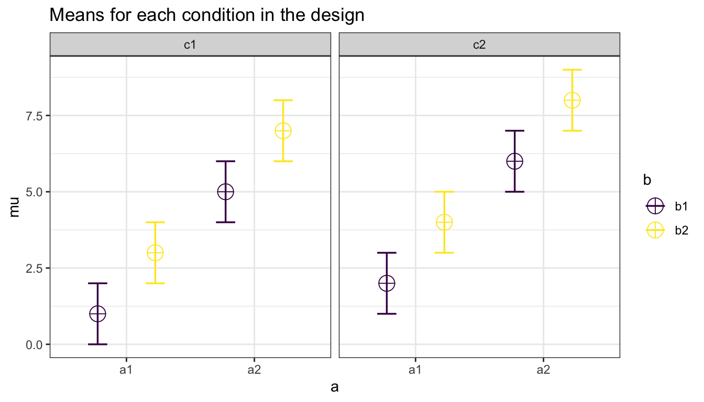
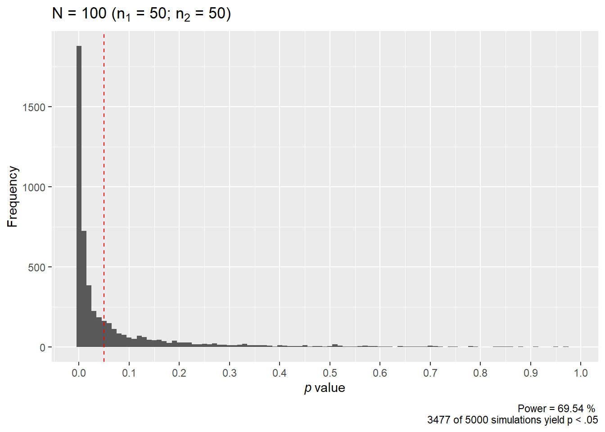

Chapter 1 The Experimental Design
This section introduces how Superpower allows the user to specify their experimental design.
Currently, this pacakge only provides power analysis for ANOVAs (and MANOVA for repeated measures) so all designs are currently defined by the ANOVA_design function.
1.1 ANOVA_design function
Currently the ANOVA_design function can create designs with up to three factors, for both within, between, and mixed designs. It requires the following input: design, n, mu, sd, r, and optionally allows you to set labelnames.
design: string that specifies the design (see below).n: the sample size for each between subject condition.mu: a vector with the means for each condition.sd: the population standard deviation. Assumes homogeneity of variances (only one standard deviation can be provided).r: the correlation(s) for within designs (or 0 for between designs).labelnames: This is an optonal vector of words that indicates factor names and level names (see below).- A final optional setting is to specify if you want to automatically print a plot or not (
plot= TRUE or FALSE)
1.1.1 Specifying the design using design
The design option is used to specify the design.
Every factor is specified with a number, indicating the number of levels of the factor, and a letter, b or w, to indicate whether the factor is manipulated between or within participants.
For example, a 2b design has two between-participant groups.
A 12w design has one factor with 12 levels, all manipulated within-participants.
A 2b*3w is a design with two factors (a 2b factor and a 3w factor), the first of which has 2 between participant levels (2b), and the second of which has 3 within participants levels (3w).
If there are multiple factors (the functions take up to three different factors) separate factors with a * (asterisk).
An example of a 2b*3w design is a group of people in one condition who get a drug, and a group of people in another condition who get a placebo (hence 2b), and we measure their health before they take the pill, one day after they take the pill, and a week after they take the pill (hence the 3w).
1.1.2 Specifying the means using mu
Note that for each cell in the design, a mean must be provided. Thus, for a 2b*3w design, 6 (i.e., 2*3=6) means need to be entered.
Means need to be entered in the correct order. ANOVA_design outputs a plot so you can check if you entered all means as you intended. Always carefully check if the plot that is generated matches your expectations.
The general principle is that the code generates factors, indicated by the factor names you entered in the labelnames variable, (i.e., condition and time). Levels are indicated by factor names and levels (e.g., control_time1, control_time2, control_time3, etc).
If your design has just one factor, just enter the means in the same order as the labelnames (see below). For more factors, note the general pattern in the example below. Means are entered in the following order for a 3 factors design (each with 2 levels):
- a1 b1 c1
- a1 b1 c2
- a1 b2 c1
- a1 b2 c2
- a2 b1 c1
- a2 b1 c2
- a2 b2 c1
- a2 b2 c2
So if you enter the means 1, 2, 3, 4, 5, 6, 7, 8 the first 4 means correspond to level 1 of factor 1, the second 4 means correspond to level 2 of factor 1. Within the first 4 means, the first 2 correspond to level 1 of factor 2, and within those 2 means, the first corresponds to level 1 of factor 3.
The plot below visualizes means from 1 to 8 being entered in a vector: mu = c(1, 2, 3, 4, 5, 6, 7, 8) so you can see how the basic ordering works.

1.1.3 Specifying label names
To make sure the plots and tables with simulation results are easy to interpret, it really helps to name all factors and levels. You can enter the labels in the ‘labelnames’ variable. You can also choose not to specify names. Then all factors are indicated by letters (a, b, c) and all levels by numbers (a1, a2, a3).
For the 2x3 design we have been using as an example, where there are 2 factors (condition and time of measurement), the first with 2 levels (placebo vs. medicine) and the second with three levels (time1, time2, and time3) we would enter the labels as follows:
c("condition", "placebo", "medicine", "time", "time1", "time2", "time3")
As you can see, you follow the order of the design (2b*3w), and first write the FACTOR label (condition) followed by the levels of that factor (placebo and medicine). Then you write the second factor name (time) followed by the three labels for each LEVEL (time1, time2, time3). Do not use spaces or special characters in the names (so not “time 1” or “time_1” but “time1”).
Some examples:
- One within factor (time with 2 levels), 2w:
c("time", "morning", "evening") - Two between factors (time and group, each with 2 levels), 2b*2b:
c("time", "morning", "evening", "group", "control", "experimental") - Two between factors (time and group, first with 4 levels, second with 2 levels), 4b*2b:
c("time", "morning", "afternoon" ,"evening", "night", "group", "control", "experimental")
1.1.4 Specifying the correlation
Depending on whether factors are manipulated within or between, variables are correlated, or not. You can set the correlation for within-participant factors. You can either assume all factors have the same correlation (e.g., r = 0.7), or enter the correlations for each pair of observations separately by specifying a correlation matrix.
In a 2x2 design, with factors A and B, each with 2 levels, there are 6 possible comparisons that can be made.
- A1 vs. A2
- A1 vs. B1
- A1 vs. B2
- A2 vs. B1
- A2 vs. B2
- B1 vs. B2
The number of possible comparisons is the product of the levels of all factors squared minus the product of all factors, divided by two. For a 2x2 design where each factor has two levels, this is:
## [1] 6The number of possible comparisons increases rapidly when adding factors and levels for each factor. For example, for a 2x2x4 design it is:
## [1] 120Each of these comparisons can have their own correlation if the factor is manipulated within subjects (if the factor is manipulated between subjects the correlation is 0). These correlations determine the covariance matrix. Potvin and Schutz (2000) surveyed statistical tools for power analysis and conclude that most software packages are limited to one factor repeated measure designs and do not provide power calculations for within designs with multiple factor (which is still true for software such as G*Power). Furthermore, software solutions which were available at the time (DATASIM by Bradley, Russel, & Reeve, 1996) required researchers to assume correlations were of the same magnitude for all within factors, which is not always realistic. If you do not want to assume equal correlations for all paired comparisons, you can specify the correlation for each possible comparison.
The order in which the correlations are entered in the vector should match the covariance matrix. The order for a 2x2 design is given in the 6 item list above. The general pattern is that the matrix is filled from top to bottom, and left to right, illustrated by the increasing correlations in the table below. The diagonal is generated dynamically (based on the standard deviation).
| Matrix | a1_b1 | a1_b2 | a2_b1 | a2_b2 |
|---|---|---|---|---|
| a1_b1 | 1.00 | 0.91 | 0.92 | 0.93 |
| a1_b2 | 0.91 | 1.00 | 0.94 | 0.95 |
| a2_b1 | 0.92 | 0.94 | 1.00 | 0.96 |
| a2_b2 | 0.93 | 0.95 | 0.90 | 1.00 |
We would enter this correlation matrix in the ANOVA_design function as:
design_result <- ANOVA_design(design = "2w*2w",
n = 80,
mu = c(1.1, 1.2,
1.3, 1.4),
sd = 1,
r <- c(0.91, 0.92,
0.93, 0.94,
0.95, 0.96),
labelnames = c("COLOR",
"red", "blue",
"SPEED",
"fast", "slow"),
plot = TRUE) We can check the correlation matrix by asking for it from the design_result object to check if it was entered the way we wanted:
| red_fast | red_slow | blue_fast | blue_slow | |
|---|---|---|---|---|
| red_fast | 1.00 | 0.91 | 0.92 | 0.93 |
| red_slow | 0.91 | 1.00 | 0.94 | 0.95 |
| blue_fast | 0.92 | 0.94 | 1.00 | 0.96 |
| blue_slow | 0.93 | 0.95 | 0.96 | 1.00 |
We should also check the covariance-variance matrix to ensure the ANOVA_design function working properly.
The variance should be the diagonal element while the off-diagonal elements should be equal to covariance = correlation*variance or \(cov_{x,y}=\frac{\sum_{i=1}^{N}(x_{i}-\bar{x})(y_{i}-\bar{y})}{N-1}\).
In this case, it is identical to the correlation matrix because the variance is equal to 1.
| red_fast | red_slow | blue_fast | blue_slow | |
|---|---|---|---|---|
| red_fast | 1.00 | 0.91 | 0.92 | 0.93 |
| red_slow | 0.91 | 1.00 | 0.94 | 0.95 |
| blue_fast | 0.92 | 0.94 | 1.00 | 0.96 |
| blue_slow | 0.93 | 0.95 | 0.96 | 1.00 |
1.1.5 Specifying the sample size
You can set the sample size per condition by setting a value for n. The assumption is that you will collect equal sample sizes in all conditions [expanding Superpower to allow different sample sizes in each group is a planned future option].
This means for the 2w*2w design above there is a total of 80 participants/subjects with a total of 320 observations.
1.1.6 Specifying the standard deviation
You can set the standard deviation(s) by setting a value of sd. Currently, Superpower allows you to violate the assumption of homogeneity of variance. This will affect the type I error rate if the differences in sd between conditions are extreme. Note that there is always some uncertainty in which values you can expect in the study you are planning. It is therefore useful to perform sensitivity analyses (e.g., running the simulation with the expected standard deviation, but also with more conservative or even worst-case-scenario values).